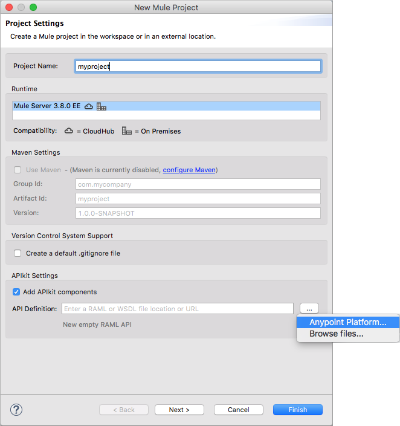

Consuming a Web Service Tutorial
Using API Designer and Anypoint Studio 6.0, you can build an interface based on RAML and add a new web service to the interface. You call the API to access services.
In this example, the interface connects to a free online REST service, JSONPlaceholder. Resources are:
-
All user information
-
Information about user having ID = n
The JSONPlaceholder service provides all the JSON user information. The RESTful API interface navigates the JSON resource and filters user information. One filter takes a user ID parameter and returns information about the specific user. Another filter, implemented as a DataWeave component added to the users backend flow, returns the names of all users.
Assuming you have installed Anypoint Studio 6.0 and later, use the procedures in this section to create the API interface that performs these tasks:
-
Consumes a web service.
-
Adds logic to create an additional REST service that filters the JSON data.
Consume a Web Service
First, you create the API interface in RAML using API Designer. Next, you create an APIkit project in Studio using the RAML. You simulate calls to the API, and satisfied that all is working as expected, you modify the project to use real data to consume the web service, filter the returned data using a parameter, and add a web service to filter the data to list an attribute from each record.
Create the API interface
Creating the RAML code for this interface is covered later. In this part of the tutorial, you use a provided RAML file to create the API interface to consume JSONPlaceholder web services:
-
Unzip the downloaded archive.
The following files are unpacked:
-
api.raml
-
user-example.json
-
-
Add an API named jsonplaceholder to Anypoint Platform.
-
In API Designer, copy/paste the contents of the downloaded api.raml.
-
Click Import and import the
user-example.jsonfrom the downloaded archive into API Designer. Save the file using the gear icon next to the file name. -
Select Save All from the Save drop-down.
Create an APIkit Project in Studio
To create an APIkit project in Studio to enhance the API:
-
In Studio, create a new Mule project: File > New > Mule Project. The New Mule Project dialog appears.
-
In Project Settings, set the following options:
-
Project Name:
myproject -
Runtime: Select or accept the default
Mule Server 3.8.0 EEor later. -
Add APIkit components: Check Add APIkit components.
-
API Definition: Click the browse icon and select API Platform.
Sign in. The Browse API Manager for APIs dialog appears listing the APIs in your Anypoint Platform Account.
-
-
Select
jsonplaceholderand click OK. -
Click Finish.
APIkit creates the following flows:
-
api-console, the APIkit Console flow for simulating calls to the API
-
backend flows
get:/users/userbyid:api-configandget:/users:api-config
-
Right-click the API name
api.xmland select Run As > Mule Application.On the Console tab, messages indicate that the project is deployed, and the APIkit Console appears in the APIkit Console tab.
Simulate API Calls Using APIkit Console
Use APIkit Console to simulate calls to the API.
-
On the /users resource GET tab, click Try It.
-
Click GET to retrieve the RAML example in the
user-example.jsonfile.Status 200 and the user 1 example appears:
[ { "id": 1, "name": "Leanne Graham", "username": "Bret", "email": "Sincere@april.biz", "address": { "street": "Kulas Light", "suite": "Apt. 556", "city": "Gwenborough", "zipcode": "92998-3874", "geo": { "lat": "-37.3159", "lng": "81.1496" } }, "phone": "1-770-736-8031 x56442", "website": "hildegard.org", "company": { "name": "Romaguera-Crona", "catchPhrase": "Multi-layered client-server neural-net", "bs": "harness real-time e-markets" } } ] -
On the /usersbyid resource GET tab, click Try It.
-
Click GET to retrieve the RAML example for user 3 using the default parameter 3, as written in the RAML file.
[{ "id": 3, "name": "Clementine Bauch", "username": "Samantha", "email": "Nathan@yesenia.net", "address": { "street": "Douglas Extension", "suite": "Suite 847", "city": "McKenziehaven", "zipcode": "59590-4157", "geo": { "lat": "-68.6102", "lng": "-47.0653" } }, "phone": "1-463-123-4447", "website": "ramiro.info", "company": { "name": "Romaguera-Jacobson", "catchPhrase": "Face to face bifurcated interface", "bs": "e-enable strategic applications" } }]
Modify the Project to Use Actual Data
After simulating calls to the API, prepare the API for publication. Modify and add flows that return actual data from the JSON Placeholder site instead of the data from RAML examples.
Modify the Users Flow to Consume a Web Service
To modify the users flow to get actual data from the Json Placeholder site:
-
Select the
get:/users:api-configflow. -
In the properties editor, in Name, rename the flow to
Users. -
Drag an HTTP component to the Source section of the flow.
-
In the properties editor of the HTTP Listener, change the Path from
/to/placeholderand set Allowed Methods to GET. -
In Connector Configuration of the HTTP Listener, click and click OK to accept the default host 0.0.0.0 and port 8081.
-
Delete the Set Payload component from the Process area of the Users flow.
-
Drag an HTTP connector to the Process area of the flow.
-
In the properties editor of the HTTP Requester, set the following options:
-
Path:
/users -
Method: Select GET from the drop-down.
-
-
In Connector Configuration of the HTTP Requester, click
 .
.The HTTP Request Configuration dialog appears.
-
Set the following HTTP Request Configuration options:
-
Accept the default Name, HTTP_Request_Configuration.
-
Accept the default HTTP protocol.
-
Set Host to jsonplaceholder.typicode.com.
-
Set Port to 80.
-
-
Click OK.
-
Save changes.
Filter Users By ID Using a Parameter
Revise the flow to filter users by ID:
-
Select the get:/users/userbyid:api-config flow.
-
In the properties editor, in Name set the name to
UsersByID. -
Drag an HTTP component to the Source section of the flow, and in the properties editor, set Path to
/placeholder/byid. -
Delete Set Payload from the flow, and in its place, drag an HTTP component to the Process area.
-
In the properties editor, set the following HTTP Requester options:
-
Path: Set to
/users. -
Method: Select GET from the drop-down.
-
Click Add Parameter and set the following options:
-
Name to
id -
Value to
#[message.inboundProperties.'http.query.params'.id]
-
-
Add a Service to Get Names Only
To add a flow to filter users to get a list of user names:
-
Copy and paste the Users flow to create another flow: Select the flow, and then Edit > Copy. Click a blank area of the canvas, and select Edit > Paste.
A copy of the Users flow appears at the bottom of the canvas.
-
Select the
Copy_of_Usersflow, and in the properties editor, in Name change the flow name fromCopy_of_UserstoUsersNames. -
Select the HTTP listener component, and in the properties editor, change the Path from
/placeholderto/placeholder/names. -
Drag a Transform Message component from the Mule palette to the right of the HTTP requester.
-
In the properties editor, change the output code to specify the application/json mime type instead of application/java, and set the payload as follows:
%dw 1.0 %output application/json --- payload.name
-
Save all.
Test the API
-
In Package Explorer, right-click the project name, and choose Run As > Mule Application.
-
Open a browser, and go to
http://localhost:8081/placeholder.All user information from the JSONPlaceholder service appears:
[ { "id": 1, "name": "Leanne Graham", "username": "Bret", "email": "Sincere@april.biz", "address": { "street": "Kulas Light", "suite": "Apt. 556", "city": "Gwenborough", "zipcode": "92998-3874", "geo": { "lat": "-37.3159", "lng": "81.1496" ... { "id": 10, "name": "Clementina DuBuque", "username": "Moriah.Stanton", "email": "Rey.Padberg@karina.biz", "address": { "street": "Kattie Turnpike", "suite": "Suite 198", "city": "Lebsackbury", "zipcode": "31428-2261", "geo": { "lat": "-38.2386", "lng": "57.2232" } ... ] -
Get user information about only the user having ID = 4. Go to
http://localhost:8081/placeholder/byid?id=4.[ { "id": 4, "name": "Patricia Lebsack", "username": "Karianne", "email": "Julianne.OConner@kory.org", "address": { "street": "Hoeger Mall", "suite": "Apt. 692", "city": "South Elvis", "zipcode": "53919-4257", "geo": { "lat": "29.4572", "lng": "-164.2990" } }, "phone": "493-170-9623 x156", "website": "kale.biz", "company": { "name": "Robel-Corkery", "catchPhrase": "Multi-tiered zero tolerance productivity", "bs": "transition cutting-edge web services" } } ] -
Get only the names of users. Go to
http://localhost:8081/placeholder/names.[ "Leanne Graham", "Ervin Howell", "Clementine Bauch", "Patricia Lebsack", "Chelsey Dietrich", "Mrs. Dennis Schulist", "Kurtis Weissnat", "Nicholas Runolfsdottir V", "Glenna Reichert", "Clementina DuBuque" ]
Completed Flows
The canvas after completing API interface contains these flows, stacked vertically. For example purposes, the flows are arranged to fit on the page.
Configuration XML
<?xml version="1.0" encoding="UTF-8"?>
<mule xmlns:dw="http://www.mulesoft.org/schema/mule/ee/dw" xmlns:doc="http://www.mulesoft.org/schema/mule/documentation" xmlns:tracking="http://www.mulesoft.org/schema/mule/ee/tracking" xmlns="http://www.mulesoft.org/schema/mule/core" xmlns:apikit="http://www.mulesoft.org/schema/mule/apikit" xmlns:http="http://www.mulesoft.org/schema/mule/http" xmlns:spring="http://www.springframework.org/schema/beans" xmlns:xsi="http://www.w3.org/2001/XMLSchema-instance" xsi:schemaLocation="http://www.mulesoft.org/schema/mule/core http://www.mulesoft.org/schema/mule/core/current/mule.xsd
http://www.mulesoft.org/schema/mule/http http://www.mulesoft.org/schema/mule/http/current/mule-http.xsd
http://www.mulesoft.org/schema/mule/apikit http://www.mulesoft.org/schema/mule/apikit/current/mule-apikit.xsd
http://www.springframework.org/schema/beans http://www.springframework.org/schema/beans/spring-beans-3.1.xsd
http://www.mulesoft.org/schema/mule/ee/tracking http://www.mulesoft.org/schema/mule/ee/tracking/current/mule-tracking-ee.xsd
http://www.mulesoft.org/schema/mule/ee/dw http://www.mulesoft.org/schema/mule/ee/dw/current/dw.xsd">
<http:listener-config name="api-httpListenerConfig" host="0.0.0.0" port="8081" doc:name="HTTP Listener Configuration"/>
<apikit:config name="api-config" raml="api.raml" consoleEnabled="false" doc:name="Router"/>
<http:request-config name="HTTP_Request_Configuration" host="jsonplaceholder.typicode.com" port="80" doc:name="HTTP Request Configuration"/>
<flow name="api-main">
<http:listener config-ref="api-httpListenerConfig" path="/api/*" doc:name="HTTP"/>
<apikit:router config-ref="api-config" doc:name="APIkit Router"/>
<exception-strategy ref="api-apiKitGlobalExceptionMapping" doc:name="Reference Exception Strategy"/>
</flow>
<flow name="api-console">
<http:listener config-ref="api-httpListenerConfig" path="/console/*" doc:name="HTTP"/>
<apikit:console config-ref="api-config" doc:name="APIkit Console"/>
</flow>
<flow name="UsersByID">
<http:listener config-ref="api-httpListenerConfig" path="/placeholder/byid" doc:name="HTTP"/>
<http:request config-ref="HTTP_Request_Configuration" path="/users" method="GET" doc:name="HTTP">
<http:request-builder>
<http:query-param paramName="id" value="#[message.inboundProperties.'http.query.params'.id]"/>
</http:request-builder>
</http:request>
</flow>
<flow name="Users">
<http:listener config-ref="api-httpListenerConfig" path="/placeholder" allowedMethods="GET" doc:name="HTTP"/>
<http:request config-ref="HTTP_Request_Configuration" path="/users" method="GET" doc:name="HTTP"/>
</flow>
<apikit:mapping-exception-strategy name="api-apiKitGlobalExceptionMapping">
<apikit:mapping statusCode="404">
<apikit:exception value="org.mule.module.apikit.exception.NotFoundException" />
<set-property propertyName="Content-Type" value="application/json" doc:name="Property"/>
<set-payload value="{ "message": "Resource not found" }" doc:name="Set Payload"/>
</apikit:mapping>
<apikit:mapping statusCode="405">
<apikit:exception value="org.mule.module.apikit.exception.MethodNotAllowedException" />
<set-property propertyName="Content-Type" value="application/json" doc:name="Property"/>
<set-payload value="{ "message": "Method not allowed" }" doc:name="Set Payload"/>
</apikit:mapping>
<apikit:mapping statusCode="415">
<apikit:exception value="org.mule.module.apikit.exception.UnsupportedMediaTypeException" />
<set-property propertyName="Content-Type" value="application/json" doc:name="Property"/>
<set-payload value="{ "message": "Unsupported media type" }" doc:name="Set Payload"/>
</apikit:mapping>
<apikit:mapping statusCode="406">
<apikit:exception value="org.mule.module.apikit.exception.NotAcceptableException" />
<set-property propertyName="Content-Type" value="application/json" doc:name="Property"/>
<set-payload value="{ "message": "Not acceptable" }" doc:name="Set Payload"/>
</apikit:mapping>
<apikit:mapping statusCode="400">
<apikit:exception value="org.mule.module.apikit.exception.BadRequestException" />
<set-property propertyName="Content-Type" value="application/json" doc:name="Property"/>
<set-payload value="{ "message": "Bad request" }" doc:name="Set Payload"/>
</apikit:mapping>
</apikit:mapping-exception-strategy>
<flow name="UserNames">
<http:listener config-ref="api-httpListenerConfig" path="/placeholder/names" allowedMethods="GET" doc:name="Copy_of_HTTP"/>
<http:request config-ref="HTTP_Request_Configuration" path="/users" method="GET" doc:name="Copy_of_HTTP"/>
<dw:transform-message doc:name="Transform Message">
<dw:set-payload><![CDATA[%dw 1.0
%output application/json
---
payload.name]]></dw:set-payload>
</dw:transform-message>
</flow>
</mule>RAML
The API interface in the JSONPlaceholder example uses the following RAML:
#%RAML 1.0
title: placeholder
version: 1.0.development
baseUri: http://jsonplaceholder.typicode.com
/users:
get:
description: Retrieve a list of all the users
responses:
200:
body:
application/json:
example: !include user-example.json
/userbyid:
get:
description: Get information about a particular user
queryParameters:
id:
description: Specify the id of the user you want to retrieve
type: integer
required: false
example: 3
responses:
200:
body:
application/json:
example: |
{
"id": 3,
"name": "Clementine Bauch",
"username": "Samantha",
"email": "Nathan@yesenia.net",
"address": {
"street": "Douglas Extension",
"suite": "Suite 847",
"city": "McKenziehaven",
"zipcode": "59590-4157",
"geo": {
"lat": "-68.6102",
"lng": "-47.0653"
}
},
"phone": "1-463-123-4447",
"website": "ramiro.info",
"company": {
"name": "Romaguera-Jacobson",
"catchPhrase": "Face to face bifurcated interface",
"bs": "e-enable strategic applications"
}
}
The next section covers how to create this RAML.
Creating the RAML
You can create a RAML using API Designer on Anypoint Platform. API Designer checks syntax and provides instant feedback and a mocking service. The mocking service simulates the interface.
The procedure in this section describes how to create the RAML that you downloaded for the JSONPlaceholder API Interface example. The RAML tab in the previous section lists the code for this RAML. The RAML connects to a free online REST service, JSONPlaceholder and provides the services previously described.
To create the RAML:
-
Provide the required declaration of the RAML version, the version of the API you are creating, and the baseURI, which is the REST service.
#%RAML 1.0 title: placeholder version: development1 baseUri: http://jsonplaceholder.typicode.com
-
Include resources in the RAML using a forward slash followed by an arbitrary resource name and a colon.
For this example, the resources are:
-
All user information
-
User names only
#%RAML 1.0 title: placeholder version: development1 baseUri: http://jsonplaceholder.typicode.com /users: /names:
-
-
Enter the methods associated with the resources.
For this example, you need to specify the GET method to retrieve the information defined in
http://jsonplaceholder.typicode.com. Indent the /userbyid resource one level from the /user level. The /userbyid resource filters the content of the /user resource.#%RAML 0.8 title: placeholder version: development1 baseUri: http://jsonplaceholder.typicode.com /users get: /userbyid get: -
Below each
get:, include an indented description followed by responses (required).Responses consist of a map of the HTTP status codes the API returns on success.
-
Include the user-example.json for the response of
getfor/users:... description: Retrieve a list of all the users responses: 200: body: application/json: example: !include user-example.json ... -
Use the following example response of
getfor/usersbyid:... description: Get information about a particular user queryParameters: id: description: Specify the id of the user you want to retrieve type: integer required: false example: 3 responses: 200: body: application/json: example: | { "id": 3, "name": "Clementine Bauch", "username": "Samantha", "email": "Nathan@yesenia.net", "address": { "street": "Douglas Extension", "suite": "Suite 847", "city": "McKenziehaven", "zipcode": "59590-4157", "geo": { "lat": "-68.6102", "lng": "-47.0653" } }, "phone": "1-463-123-4447", "website": "ramiro.info", "company": { "name": "Romaguera-Jacobson", "catchPhrase": "Face to face bifurcated interface", "bs": "e-enable strategic applications" } } ...
-